0. 结论先行
一句话：铲齿守量产，微通道 / MLCP 是 2 kW 级主路径，射流补热点，金刚石做均热，纳米流体不宜当主产品。最有价值的窗口不在“再挖一条直通道”，而在分区 / 拓扑流道、射流–微通道杂交、去 TIM2 盖板一体化、金刚石嵌件与可制造防堵防漏工艺。
- 冷板式液冷已是未来 3–5 年 AI 服务器的主流散热形态。欧洲专利库 2000–2023 年数据中心冷却专利显示，2015 年后液冷申请占比持续上升，近期时段液冷可占相关专利约八成，其中直接液冷（冷板）是主体。
- 五条技术路线并不并列竞争，而是分层叠加（见下表与第 3 章）。
- 国内外分工已经出现：美欧日掌握基础结构与封装级微射流 / 微通道；台湾厂商卡位 NVIDIA MLCP / MCL 认证产线；大陆在系统级液冷（浪潮、曙光数创、英维克、华为）专利密度高，但微米级蚀刻 + 真空扩散焊 + 半导体级洁净仍是短板。
英伟达口径以第 2.4.0 节为准，分官方 / OEM / 产业报道三层，不得相加。热流分硅面积平均与热点；热阻随 TDP 上台阶必须下降。
1. 调研范围、数据源与检索策略
1.1 问题定义
必须以英伟达最新量产与在研 SKU定功率密度，而不是停在 H100。公开链：H100/H200 700 W → B200 1000 W → B300 常见报道 1400 W（Lenovo TGP 有 1100 W 口径）→ Rubin R100 报道 1800 W（Max-Q）/ 2300 W（Max-P） → Rubin Ultra 路线图约 3600 W/封装。机柜：GB300 NVL72 为 Lenovo 135 kW TDP / 155 kW EDP、NVIDIA RA 142 kW；Vera Rubin NVL72 报道 180–220 kW。传统“铜盖 + TIM2 + 铲齿冷板”在 B300 已紧，Rubin 上必须靠微通道 / 射流杂交或 MLCP。
本报告只回答三件事：
- 国内外专利在五条技术方向上各自保护什么？
- 每条路线的优势、短板、工艺门槛是什么？
- 对后续研发、供应链与规避设计，哪些空白更值得占？
1.2 数据源头（国内外同时覆盖）
| 层级 | 国内 | 国际 |
|---|---|---|
| 官方专利库 | 中国国家知识产权局（CNIPA）公开文本；专利检索及分析系统 | USPTO、EPO / Espacenet、WIPO Patentscope |
| 聚合检索 | Google Patents（CN 公开号）、Patsnap Eureka 公开页 | Google Patents（US / EP / WO）、Freepatentsonline |
| 学术 / 综述 | 华中科大等高校授权专利；国内券商 / 标准文件交叉验证 | Energies 2024, 17, 3615（斯图加特大学，EPO 2000–2023）；Mudawar 等换热综述 |
| 产业情报 | 浪潮、曙光数创、华为 CloudMatrix 公开材料 | NVIDIA / TSMC 供应链报道，JetCool、Element Six、Future Market Insights |
1.3 建议检索式（可复用于正式库）
分类号（优先组合）
H01L 23/473半导体装置液体冷却H05K 7/20254/H05K 7/20218电子设备液体冷却F28F 3/12内部流体通道板F28F 13/06/F28F 13/12射流、扰动强化C09K 5/10/C09K 5/14传热液体、纳米分散C23C 16/27CVD 金刚石；C22C 26/00金刚石复合材料
中文关键词组
(微通道 OR 微流道 OR 微翅片 OR 铲齿 OR 针肋
OR 冲击射流 OR 射流冲击 OR 金刚石 OR 纳米流体)
AND (冷板 OR 液冷板 OR 水冷板)
AND (芯片 OR GPU OR CPU OR 加速器 OR 服务器 OR 数据中心)英文关键词组
(microchannel OR microfluidic OR microfin OR skived
OR pin-fin OR "jet impingement" OR microjet
OR diamond OR nanofluid)
AND ("cold plate" OR coldplate OR "liquid cooling")
AND (GPU OR CPU OR accelerator OR "data center" OR server)过滤：优先看独立权利要求中的流道几何、喷嘴阵列、盖板一体化、材料键合、工质配方；系统级机柜 / CDU 仅作背景。
2. 产业与专利总态势
2.1 为什么冷板专利在 2015 年后加速
斯图加特大学对 EPO 2000–2023 数据中心冷却专利的分类结果表明：
- 相关样本约 733 件，其中判定相关约 496 件。
- 整体分布：液冷约 35%，风冷约 27%；液冷内部，直接液冷约 20%（冷板约 17%），浸没约 9%。
- 按时段看：风冷占比从早期约 69% 降到近期约 9%，液冷从约 24% 升到约 84%；直接液冷始终占液冷的 58–68%。
- 2018 年后风冷申请明显回落，优化空间被判定为接近耗尽。
市场侧同步给出需求：Direct-to-Chip 冷板市场有机构预测 2026 年约 32 亿美元，2036 年约 139 亿美元，CAGR 约 15.8%；其中微通道冷板约占需求 42%，HPC / AI 应用约占 45%（Future Market Insights，公开摘要口径）。
2.2 技术代际：从“贴一块铜板”到“把水做到硅旁边”
| 代际 | 结构 | 热阻瓶颈 | 典型工艺 | 产业状态 |
|---|---|---|---|---|
| G0 管式 / 冲压钎焊 | 埋管或宽流道 | 对流面积不足 | 冲压 + 钎焊 | 成熟，AI 高热流不够用 |
| G1 铲齿 / 微翅片 | 一体铲出密肋 | TIM2 + 沿程温升 + 流阻 | 铲齿 + 真空钎焊 / 搅拌摩擦焊 | 当前量产主力 |
| G2 微通道冷板 | 水力直径 0.1–1 mm 级通道 | 仍有 TIM2；堵塞与压降 | 蚀刻 / CNC + 扩散焊或钎焊 | 高端 GPU 快速导入 |
| G3 MLCP / MCL | 盖板或加强环内做微通道，取消独立冷板与 TIM2 | 封装翘曲、泄漏、洁净度 | 半导体级蚀刻 + 扩散焊 + 镀金 | NVIDIA Rubin 供应链验证中 |
| G4 硅内微流体 | 冷却液进入芯片或封装内部 | 蚀刻深度与机械强度、可靠性 | 光刻 / DRIE + 键合 | 微软 + Corintis、TSMC 路线，验证阶段 |
| 并行增强 | 射流、金刚石嵌件、纳米工质、拓扑流道 | 各自独立短板 | 见第 3 章 | 与 G1–G4 叠加，而非替代 |
NVIDIA 一侧公开讨论的 MLCP（Microchannel Liquid Cold Plate / Microchannel Lid）核心，是把冷却液通道做到散热盖本身，砍掉 TIM2；供应商公开名单中多见 AVC、Cooler Master、Jentech、Delta、Auras。大陆厂商（蓝思、中航光电、宁波精达等）公开信息仍多处于送样 / 验证，量产良率与泄漏风险尚未过关。微软则与 Corintis 走更激进的硅内叶脉分形微流体，实验口径称温升可降约 65%、换热约为现有冷板的三倍。
2.3 申请人格局（抽样，按角色）
- IBM：硅微通道、分层歧管、热点加密，基础专利厚
- Intel：US12133357B2；封装级 DLMJ
- NVIDIA：US12477696 微通道 + 热管
- JetCool：WO2020210587A1、US11844193
- Element Six：CVD 金刚石铬键合
- Google / Samsung / IMEC / CoolIT / Asetek / Boyd
- 浪潮：自称 2024 液冷专利 700+；铲齿转射流；CN113871359A
- 曙光数创：授权相关约 197（液冷约 158）；牵头冷板国标
- 华为：WO2026103052A1 分区混构；热阻公开口径 0.03 °C·cm²/W
- 英维克：系统级认证，冷板多为配套
- 华中科大 / 蓝锐 / 烯力：工质与旁通控制
Jentech、AVC、Auras、Cooler Master、Delta 卡位 NVIDIA 盖板、均热板、MLCP 量产。壁垒在可制造性、镀层、扩散焊、泄漏与翘曲控制，不只是专利件数。
2.4 行业规格：单位面积换热量与热阻趋势
规格必须分层写，不能混成一个数。功率与功率密度以英伟达最新量产 / 在研 SKU为尺（第 2.4.0 节），不得停在 H100，也不得把机柜、模组、单 GPU 三个 TDP 相加。芯片侧看单位面积换热量（热流密度 q″，W/cm²）和结温；冷板侧看热阻 Rθ（°C/W）或面积热阻 R″（°C·cm²/W）以及压降；机柜侧看 OEM 流量–温度表；设施侧看 ASHRAE W 类。禁止用固定 10 K 温升反推正式流量，禁止把设施水温度写成机柜进液。
2.4.0 以英伟达最新 SKU 为标尺（冷板必须对这张表）
同一颗 B300，Lenovo SXM DLC 的 TGP 1100 W 和 NVL72 常见报道的 1400 W 不是同一个数。Rubin 的 1800 / 2300 W 是软件功率档（Max-Q / Max-P），不是两颗不同的硬件。Grace、NVSwitch、CX-8 也要单独冷板，不能只按 GPU 加总。
功率阶梯（官方 / OEM / 报道三层）
| 对象 | 功率 | 硅面积 / 热流怎么算 | 对冷板的含义 | 来源 / 置信度 |
|---|---|---|---|---|
| H100 / H200 SXM | 700 W | GH100 级硅约 814 mm² → 平均约 86 W/cm² | 工程 Rθ <0.03 °C/W 已够；铲齿可覆盖 | 高 NVIDIA / 公开规格 |
| B200 SXM / GB200 GPU | 1000 W（液冷 SKU 有资料写 1000–1200 W） | 双计算 die，各约 750–800 mm²，合计约 15–16 cm² → 硅面积平均约 63–67 W/cm²。若按 8–10 cm²“单侧活性区”则 100–125 | 目标常写 <0.02 °C/W；流量约 2–3 L/min。平均热流未必高于 H100，难的是双 die 非均匀 | 高 TDP；中 面积 |
| B300 SXM DLC（Lenovo） | TGP 1100 W；HBM3e 288 GB，带宽 7.7 TB/s | 硅面积未公开，沿用同代双 die 约 15–16 cm² → 平均约 69–73 W/cm²；热点估 200–350 | 50 K 预算：Rθ ≤ 50/1100 = 0.045 °C/W；留 TIM/不均，设计 <0.028–0.030 | 高 Lenovo LP2357 |
| B300 @ GB300 NVL72 / 行业口径 | 广泛写 1400 W/GPU | 同面积假设 → 平均约 88–93 W/cm²；热点估 250–450 | 50 K 预算：Rθ ≤ 0.036 °C/W；设计 <0.022–0.025。HGX 八卡档常见封顶 1100 W，与此不同 | 中 报道；须 OEM ICD 冻结 |
| GB200 超芯片模组 | 约 2700 W（2 GPU + Grace） | 多芯片非均匀：两处 GPU 热点 + CPU + HBM | 禁止一条等宽槽冷却整模组；应对每 GPU 独立冷板或分区流道 | 中 公开拆解 / 厂商 |
| Grace CPU（GB300 托盘） | Lenovo：300 W，72 核 Neoverse V2 | 低于 GPU，但与 GPU 同托盘、同 TCS | 可与 GPU 共歧管；冷板单独，热图不同 | 高 Lenovo |
| GB300 NVL72 整柜 | 72×B300 + 36×Grace；Lenovo 135 kW TDP / 155 kW EDP；NVIDIA RA 142 kW；Supermicro 132–140 kW | 约 90% 液 / 10% 风。液冷侧约 120–140 kW | 冷板按芯片设计；水力按 OEM 25–45 °C ↔ 59–177 L/min。四个机柜口径不得相加 | 高 与本仓库 GB300 总体设计 v2.2 一致 |
| Compute Tray | 4×B300 + 2×Grace。按 4×1100+2×300 = 5.0 kW；若 GPU 按 1400 W 则 6.2 kW | 4 个 GPU 热点 + 2 个 CPU + HBM | 每 GPU 独立冷板或分区流道；不得整托盘一条直槽 | 高 构成 / 中 千瓦加总 |
| Rubin R100（GR100） | 报道 1800 W Max-Q / 2300 W Max-P。二者是软件功率档，不是两颗芯片；上限 2300 W/GPU。双近光罩 die，晶体管 3360 亿，HBM4 288 GB / 22 TB/s | 报道总硅约 1456 mm²（2×~730 mm²）→ 平均 q″ ≈ 124 / 158 W/cm²。两个计算 die = 两个主热点 | 50 K 预算：Rθ ≤ 0.028 / 0.022 °C/W。38 K（Tin 45 °C、Tj 83 °C）则 ≤ 0.021 / 0.017。铲齿开始吃力，优先微通道 / 射流杂交或 MLCP；HBM 区不要套 GPU 射流 | 中 SemiAnalysis / GTC 报道；NVIDIA 开发者博文未公布 TDP |
| Vera Rubin NVL72 | 72 Rubin + 36 Vera；SemiAnalysis：2300 W 档机柜 180–220 kW | 同 GB300 机柜外形，功率上一个台阶 | 冷板流量 / 压降窗要按新 ICD 重开，不能沿用 GB300 表 | 中 产业报道，非订单 ICD |
| Rubin Ultra 封装 | 路线图约 3600 W，4 计算 die + 更多 HBM | 封装内多热点；平均热流取决于面积是否再翻倍 | 冷板级可能不够，要和封装厂做嵌入式 / 两相预研。50 K 预算 Rθ ≤ 0.014 °C/W | 低–中 路线图 |
图 2-4a 英伟达数据中心 GPU 单卡功率（横轴按 2300 W = 100%）。B300 两档不要混：Lenovo TGP 1100 W（高）；NVL72 / 行业 1400 W（中）。Rubin 1800/2300 是软件功率档（中），不是订单 ICD。
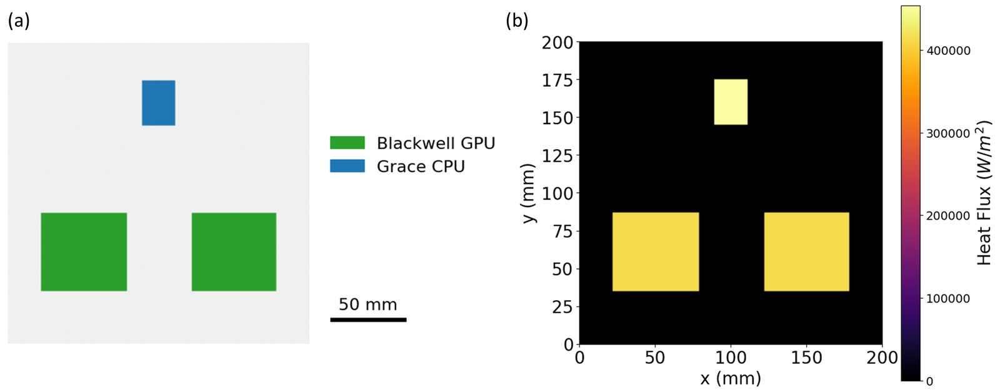
论文原图 · GB200 模组布局与热流 2×Blackwell GPU + 1×Grace，热图完全非均匀。图中色标约 3.5–4.0×10⁵ W/m² = 35–40 W/cm²，这是按约 50 mm 级 GPU footprint 的封装平均，不是硅 die 平均（die 平均更高）。冷板必须分区，不能一条等宽槽浇整板。来源：arXiv:2604.10941，Fig. 1（OA）。调研材料抽出。
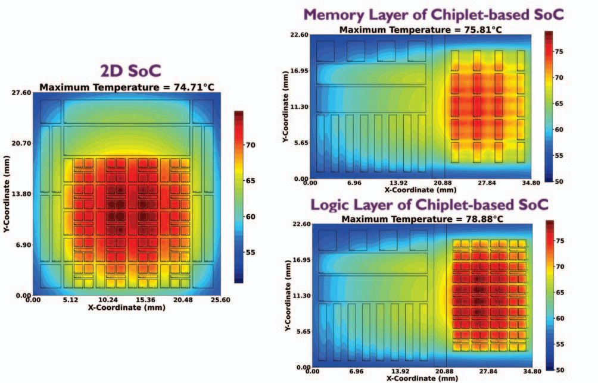
论文原图 · 2D / Chiplet 封装热分布 热点不在几何中心。GB300 / Rubin 都是这类热图，平行直通道按均匀热流优化会在热点失守。来源：Energies 2026, 19(14):3304，Fig. 2（CC BY）。调研材料抽出。
由最新芯片反推冷板必须达到的热阻
结温按持续满血常见包络 Tj ≈ 83–90 °C，进液按暖水 32–45 °C。下表给两档物理上限：50 K（偏松）和 38 K（Tin 45 °C、Tj 83 °C，更贴近 W45 暖水）。工程目标还要再低，因为 TIM1/TIM2 与热流不均会吃掉预算。
| 芯片功率 | 50 K 上限 Rθ | 38 K 上限 Rθ | 建议工程目标（含 TIM/不均） | 对应器件 |
|---|---|---|---|---|
| 700 W | 0.071 | 0.054 | <0.030 | H100 / H200 |
| 1000 W | 0.050 | 0.038 | <0.020 | B200 / GB200 GPU |
| 1100 W | 0.045 | 0.035 | <0.028–0.030 | B300 TGP（量产基线） |
| 1400 W | 0.036 | 0.027 | <0.022–0.025 | B300 NVL72 报道档 |
| 1800 W | 0.028 | 0.021 | <0.018–0.022 | R100 Max-Q 报道 |
| 2300 W | 0.022 | 0.017 | <0.012–0.016；评估射流杂交 / MLCP | R100 Max-P 报道 |
| ~3600 W | 0.014 | 0.011 | 需 MLCP / 近结区 / 可能两相 | Rubin Ultra 路线图 |
单位 °C/W。这是结–进液上限，不是冷板本体保证点。冷板对流段还要更低。厂商讨论的 Rubin <0.012 °C/W 落在 2300 W × 38 K 上限（0.017）之下，物理上说得通，但尚未见 NVIDIA 官方冻结，标低–中置信。
功率密度：硅面积平均 vs 热点
| 器件 | 功率 | 采用的硅面积假设 | 平均 q″ | 热点估（约 ×2.5） | 说明 |
|---|---|---|---|---|---|
| H100 | 700 W | ~8.14 cm²（GH100） | ~86 W/cm² | ~220 W/cm² | 面积相对有公开值 |
| B200 | 1000 W | ~15–16 cm²（双 die） | ~63–67 | 160–170；单 die 核区更高 | 面积翻倍快于功率，平均热流可低于 H100 |
| B300 | 1100 / 1400 W | 同代双 die（未公开） | ~69–93 | 170–230 | HBM 12-Hi 也发热，冷板要盖到 HBM，但 HBM 禁高速射流 |
| R100 | 1800 / 2300 W | ~14.56 cm²（报道 1456 mm²） | 124 / 158 | 每 die 更高；双热点 | 平均热流第一次明显高于 B300；难的是总功率把热阻预算压到 0.02 以下 |
2.4.1 两个必须分开的指标
| 指标 | 符号 / 单位 | 物理含义 | 谁对这个数负责 |
|---|---|---|---|
| 单位面积换热量（热流密度） | q″ = P / A，W/cm²（1 W/cm² = 10 kW/m²） | 单位芯片面积要被带走的功率。封装平均值与热点峰值可差 2–4 倍 | 芯片热图 + 冷板对流能否“接得住” |
| 器件热阻 | Rθ = (Tc − Tin) / P，°C/W | 每瓦功率造成的壳温相对进液温升。TDP 越高，同样温差预算下 Rθ 必须更低 | 冷板 + TIM2 + 流量点 |
| 面积热阻 | R″ = Rθ × A，°C·cm²/W | 去掉面积影响，便于比 TIM、盖板、对流各层。华为 CloudMatrix 公开口径约 0.03 °C·cm²/W | 界面与对流设计 |
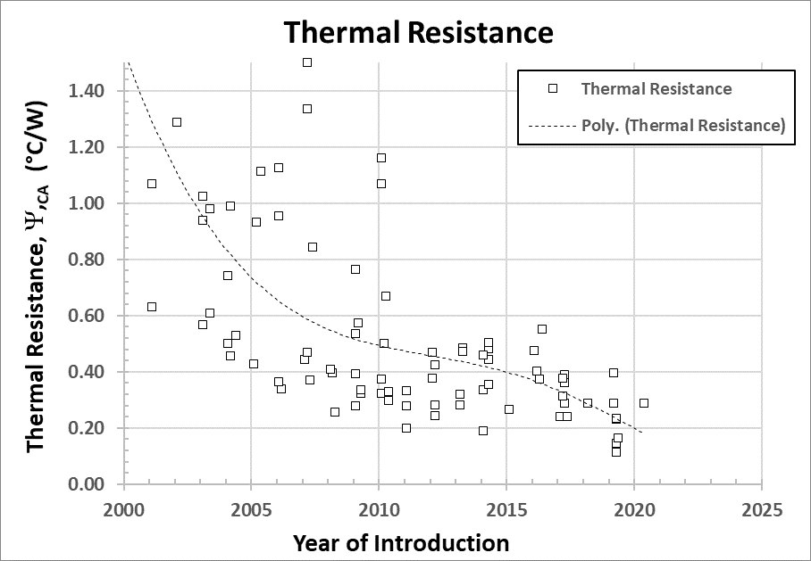
论文原图 · 壳–环境热阻被功率逐年压薄 ASHRAE 把 ΨCA 从 2000 年约 1 °C/W 压到 2020 年约 0.12。这是风冷时代的曲线；液冷冷板要把结–进液再压到 0.02 量级。来源：ASHRAE Liquid Cooling White Paper，Fig. 1。调研材料抽出。
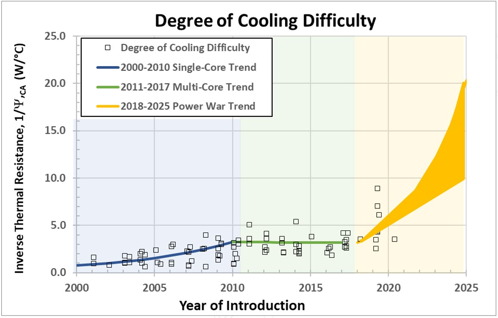
论文原图 · 冷却难度 1/ΨCA 同一批器件，难度指标随年份陡升。B300 / Rubin 只是把这条曲线再往上推一档：功率涨、进液暖、结温几乎不动。来源：ASHRAE Liquid Cooling White Paper，Fig. 2。调研材料抽出。

图 2-4 · 自绘示意（调研材料无 TIM1/TIM2 分层原图，故补绘）。传统路径：硅 → TIM1 → 盖板 → TIM2 → 冷板铜壁 → 对流。Meta / OCP 分析指出，盖板 + TIM1 可占 ASIC 总热阻约一半；TIM2 是冷板能直接砍掉的一层。MLCP / MCL 把流道做到盖板内，等于叉掉 TIM2。
2.4.2 热流密度代际（单位面积换热量）
公开资料里“热流”经常混用三种口径，表中分开写：
| 代际 | 代表器件 | TDP / 模组功率 | 硅面积平均热流 | 热点热流（报道 / 估算） | 冷却形态 |
|---|---|---|---|---|---|
| 2017–2020 | V100 / A100 | 300–400 W | 数十 W/cm² | 高于平均，仍可风冷 | 风冷为主 |
| 2022–2024 | H100 / H200 SXM | 700 W | ~86 W/cm²（GH100） | ~220；有厂商写 320–400（低置信） | 风冷极限，液冷上量 |
| 2024–2025 | B200 / GB200 GPU | 1000 W（液冷有 1000–1200） | 双 die 约 63–67；活性区口径 100–125 | 公开局部 150；500–600 只能当活性核上限 | 单相冷板标配 |
| 2025–2026 量产 | B300 / GB300 NVL72 | TGP 1100 W / 报道 1400 W；整柜 135/155 kW | ~69–93 W/cm² | 估 170–450；HBM 邻区与 SM 错位 | 整柜强制液冷，约 90/10 |
| 2026–2027 | Rubin R100 / VR NVL72 | 1800 / 2300 W；机柜 180–220 kW | 124 / 158 W/cm² | 双计算 die 双热点 | 100% 液冷；MLCP / 射流杂交 |
| 路线图 | Rubin Ultra | 封装约 3600 W | 取决于四 die 面积 | 多热点 + 近结区 | 单相吃干后看两相 |
| 实验室 / 近结区 | Chiplet / 3D | — | — | 局部 1 kW/cm² 量级已见综述 | 嵌入式微流体、金刚石、两相 |
图 2-5 单位面积换热量量级（W/cm²）。横轴按 1000 W/cm² = 100% 归一。B200 硅面积平均可低于 H100（双 die 摊薄）；Rubin Max-P 才把平均值明显抬上去。设计以 OEM 热图为准，不用活性核反推当整板平均。
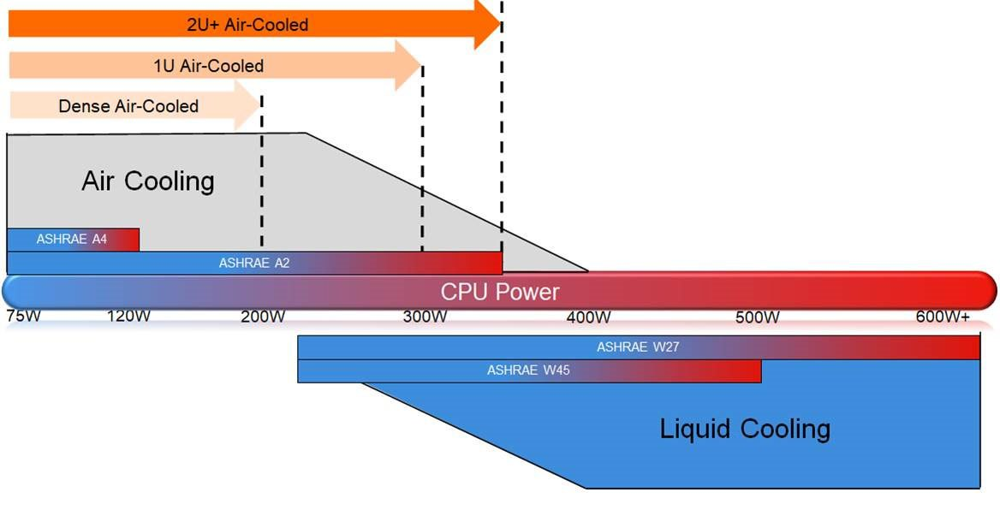
论文原图 · 风冷到液冷的功率门槛 2U+ 风冷大约在 350–400 W 封顶；H100 700 W 已越过这道墙。B300 / Rubin 只能液冷。来源：ASHRAE Liquid Cooling White Paper，Fig. 4。调研材料抽出。
2.4.3 冷板热阻目标正在下台阶
| 平台 | TDP（公开 / 厂商） | 冷板 Rθ 目标 | 结温 / 壳温包络 | 来源层级 |
|---|---|---|---|---|
| H100 / H200 | 700 W | < 0.03 °C/W | 厂商写 Tj 约 83 °C | 中（冷板厂商选型表） |
| B200 / GB200 GPU | 1000–1200 W | < 0.02 °C/W | 约 83 °C | 中 |
| B300 TGP（Lenovo） | 1100 W | < 0.028–0.030 | 50 K 上限 0.045；38 K 上限 0.035 | 高 功率；中 热阻目标 |
| B300 NVL72 报道 | 1400 W | < 0.022–0.025 | 50 K 上限 0.036；38 K 上限 0.027 | 中 |
| GB200 模组冷板（公开拆解） | 模组约 2700 W | < 0.03 °C/W；压降 ≤20 kPa | 有资料写 Tc 升 <30–40 °C | 中 |
| OCP / Meta Tide 冷板 | ~1 kW OAM | 可做到 < 0.02 °C/W（TTV，PG25 可能再差约 15%） | Group 2 进液 30–37 °C 时壳温可低于 60 °C | 高（OCP 公开指南） |
| R100 Max-Q / Max-P | 1800 / 2300 W | 物理上限 0.028 / 0.022（50 K）；厂商讨论 < 0.012 | 暖水 45 °C 时余量很薄 | 低–中，需 OEM 冻结 |
| AMD MI300X / Intel Gaudi 3 | ~750 / ~600 W | <0.025 / <0.035 | 约 90 / 95 °C | 中；对照项，非本尺 |
| 实验室两相微通道 | ≥1000 W | 可到 0.0065 K/W | 背面 ≤90 °C 常见 | 高（ITherm 等） |
图 2-6 冷板热阻目标下台阶（°C/W，越小越好）。横轴按 0.030 = 100%。铜微通道公开典型 0.015–0.025 °C/W，迷你通道约 0.025–0.045 °C/W。R100 Max-P 的 0.022 是 50 K 物理上限，不是厂商保证点。
2.4.4 冷板与系统侧硬约束（2025–2026 包络）
| 层级 | 指标 | 行业包络 | 备注 |
|---|---|---|---|
| 芯片 / 封装 | 接触平面度 / 粗糙度 | ≤0.05 mm；Ra ≤0.8 μm；裸片接触有要求 <25 μm | TIM 厚度一厚，对流再好也救不了结温 |
| 芯片 / 封装 | TIM2 面积热阻 | Meta 公开约 0.1–0.2 °C·cm²/W | MLCP 的动机就是消这一层 |
| 冷板 | 单 GPU 流量 | 约 0.5–3 L/min；初筛 1.0–1.5 L/min·kW | OCP 典型设计 1.5 L/min·kW ≈ 10 K 温升 |
| 冷板 | 压降 | 常见设计 ≤20 kPa；整板组 15–30 kPa | 不得吃掉机柜压降窗 |
| 冷板 | 进出水温升 | 设计常用 <10 K | 不能用 10 K 反推正式流量 |
| 冷板 | 材料 | GPU 优先紫铜 C110 / C1020；真空钎焊 | 铝适合低功率；禁止铜铝混用无缓蚀 |
| 机柜 | TCS 进液 | OEM 表常见 25–45 °C | GB300 基线随温度改流量 |
| 机柜 | 工质 | DI 水或 PG25 | PG25 相对纯水换热可差约 15% |
| 工质 | 过滤 / 电导 / pH | 投运颗粒常 ≤25–50 μm；电导上限常见 25 μS/cm；pH 约 7.5–10.5 | OCP 单相水基冷板冷却液规范 |
| 设施 | ASHRAE W 类 | W32 / W45 等是设施水温度等级 | 不要写成机柜进液 |
H200 SXM5 八卡组公开设计点（厂商，中置信）：进液 38 °C、8.0 L/min 纯水，冷板表面 <65 °C，流阻约 18.5 kPa。可作“当前量产铜冷板能打到哪里”的锚点。
3. 五条技术路线：优势、短板、工艺、原理图与代表专利
读图方式：五条路线不是互斥替代。商业热流取公开工程量级；实验室极值单独标注。成熟度 1–5 为本研究综合判断（5 = 已规模出货）。
商业热流能力量级（对流轴）
单位：典型商业热流 W/cm²。* 金刚石不提供对流热流，纳米流体是相对基液的增益。实验室：微通道约 790、射流杂交两相约 1127 W/cm²。
产业化成熟度（1–5）
微通道处于高端导入与 MLCP 认证之间；纳米流体停留在实验室 / 中试。
3.1 微通道（Microchannel / MLCP / MCL）
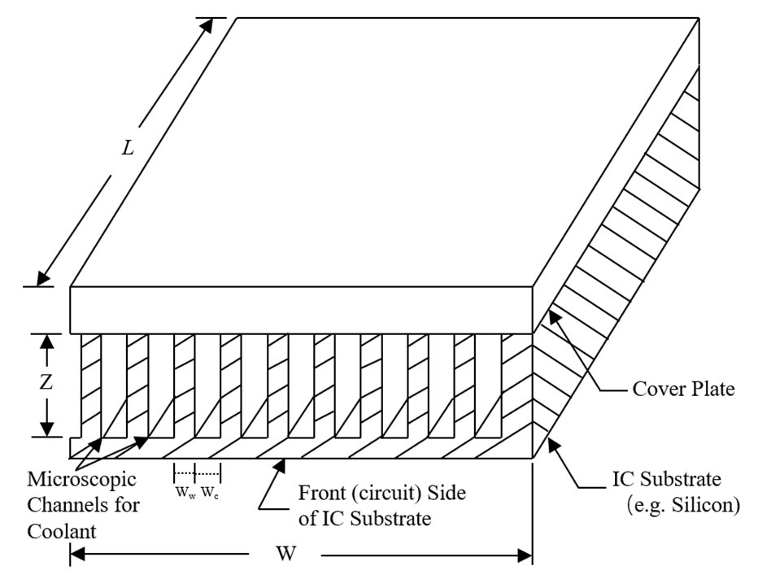
论文原图 · 直微通道 Tuckerman–Pease 路线：薄通道 + 肋导热。长通道后半段边界层变厚，这是平行槽的结构性短板。来源：Energies 2026, 19(14):3304，Fig. 6（CC BY）。调研材料抽出。
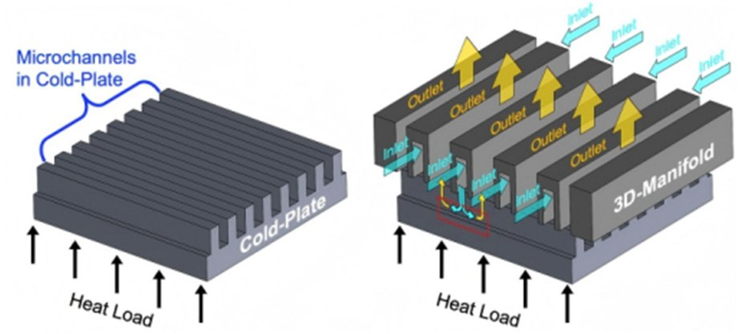
论文原图 · 平行微通道 → 3D 歧管微通道 左：一条长沟，出口侧先热。右：歧管把流程切短，进出口交错，压降和均温同时改善。来源：Energies 2026, 19(14):3304，Fig. 14（CC BY）。调研材料抽出。
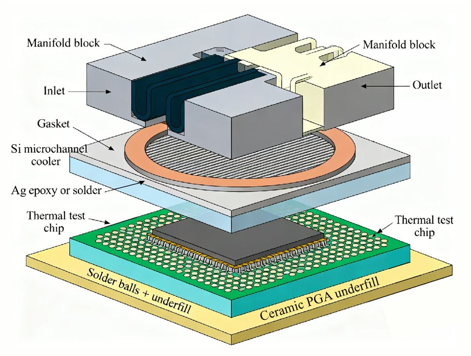
论文原图 · 封装内集成微通道（近 MLCP） 歧管 → 密封圈 → 硅微通道冷却器 → 银胶/焊料 → 热测试芯片。MLCP / MCL 走的就是取消独立冷板与 TIM2 的这条路。来源：Energies 2026, 19(14):3304，Fig. 9（CC BY）。调研材料抽出。
原理详解
对流热阻近似 Rconv ≈ 1 / (h · Awet)。微通道同时做两件事：把水力直径压到 10 µm–1 mm，减薄热边界层以提高换热系数 h；把数百条薄铜肋立在底板上，把润湿面积 Awet 放大一个数量级。Tuckerman–Pease 的经典水冷实验就是靠这条路做到约 790 W/cm²，代价是压降可到数百 kPa。
GPU 量产冷板里通道宽/高常见 0.2–1.0 mm，流速往往 <0.1–1 m/s，雷诺数常 <2000，多数是层流：换热靠“薄通道 + 铜肋导热”，不是靠湍流掺混。所以单纯把槽挖得更密，压降按水力直径的高次方上升，泵功和堵塞先到达，热阻不一定再降。
演进路径：直通道 → 歧管微通道（MMC）缩短流程、降沿程温升 → 分形 / 叶脉 / 拓扑优化对准热点 → MLCP / MCL 盖板一体化取消 TIM2 → 硅内微流体取消更多界面。对规格的含义：微通道是冲 Rθ <0.02 °C/W 的主路径，但必须带着 ≤20 kPa 压降窗和 25 μm 过滤一起设计。
- 同等流量下换热显著高于宏观流道；Tuckerman & Pease 经典水冷约 790 W/cm²（实验室、高压降）
- 可按热图定制通道密度，适配 chiplet / HBM
- MLCP / MCL 取消 TIM2，是 2 kW 级 GPU 的现实路径
- 与射流、针肋、金刚石嵌件兼容，易形成结构组合保护
- 压降随水力直径急剧上升；沿程温升导致出口侧结温偏高
- 堵塞敏感：钎料、颗粒、生物膜、纳米颗粒均可堵死 100 µm 级通道
- 盖板一体化后泄漏等于毁片，可靠性门槛跃升
- 只写“平行微通道”很难授权（IBM / Intel / Asetek 覆盖多年）
| 级别 | 典型工艺 | 适用 | 关键控制点 |
|---|---|---|---|
| 量产中端 | CNC / 铲齿 + 真空钎焊或搅拌摩擦焊 | 0.3–1.0 mm 通道 | 钎料不溢入通道、平面度、氦检漏 |
| 高端 MLCP | 化学蚀刻 / 光化学加工 + 真空扩散焊 | 30–200 µm 级、分支 / 波浪三维流道 | 无钎料堵孔、键合强度、残余应力、洁净度 |
| 封装 / 硅级 | 光刻 + DRIE + 硅-硅或硅-玻璃键合 | 芯片内或 lid 内微流体 | 蚀刻深宽比 vs 机械强度、密封、与 CoWoS 协同 |
| 新兴 | 纯铜电化学增材（ECAM）、选区激光熔化 | 拓扑流道、非直壁 | 表面粗糙度、残留粉末、耐压与腐蚀 |
公开供应链评论指出：MLCP 需要半导体级光刻 / 蚀刻 + 真空扩散焊，传统铲齿到此基本失效。这也是大陆厂商与台湾认证产线的主要代差。
| 公开号 | 权利人 | 要点 |
|---|---|---|
| US12133357B2 | Intel | 冷板开孔与翅片架构 |
| US12477696 | NVIDIA | 微通道主动液冷 + 热管被动备份 |
| US20200227341A1 | Intel 体系（DLMJ） | 微通道阵列上方叠加垂直微射流歧管 |
| CN109104844B | 中航雷华 | 多级分配、微通道只经过一次，降流阻 |
| CN120597664A/B | 广东蓝锐 | 主通道 + 旁通 + SMA 微执行器 |
| CN122263715A | — | 拓扑优化自动生成可制造微通道 |
| WO2026103052A1 | 华为 | 同一冷板内按热密度分区，混用射流 / 微通道 / 拓扑 |
学术侧：叶脉分形 + PSO 可将仿真结温从约 128 °C 降至约 31 °C（Materials 2026, 19, 679，需实验复核）。Corintis Glacierware 相对直通道可降约 13% 温升或约 55% 压降。
专利布局特征：早期保护“有微通道”本身；现在保护流量分配、旁通、可制造拓扑、与封装盖板的一体化、主动控制。新进者应避开“平行直槽 + 盖板钎焊”。
3.2 微翅片（Micro-fin / 铲齿 / 针肋 / 微柱）
调研 PDF 中没有单独的铲齿工艺剖视图（SciOpen 图 8 是径向分形通道，不是铲齿），故本节保留自绘示意；平行槽冷板本体见上一节 Energies Fig. 14 左图。

图 3-2 · 自绘示意（无对应原图）。刀具把铜“刨起”成肋，翅根与底板连续，没有钎缝热阻；盖板再真空钎焊封闭流道。针肋则把连续肋打断成柱阵，用尾迹扰流换均温。
原理详解
微翅片走的是扩展表面：单位投影面积上的对流面积 = 底板 + 两侧肋壁。肋效率取决于肋高、肋厚和铜热导。铲齿（skiving / MDT）与铣削的本质差别是不切除材料、肋根无焊缝，底板导热路径连续，比“底板 + 焊接翅片”更接近铜的体材料极限。
流动上，直肋通道仍是平行层流占多数：入口边界层薄、沿程逐渐变厚，出口侧换热变差，这就是“沿程温升 + 热点不在几何中心”时铲齿容易失守的原因。加密节距能降热阻，但流阻近似随间隙缩小而急升。针肋 / 斜切成针（US9795057）用周期性分离破坏边界层，对非均匀热流更友好，加工和清洗更难。
对规格的含义：铲齿是当前 Rθ ≈ 0.025–0.045 °C/W 量产主力，能覆盖 H100 的 <0.03 °C/W 和 B300 TGP 1100 W 的 <0.030，到 B300 1400 W / B200 的 <0.02 往往要靠非均匀节距 + 射流盖板或更细微通道接力。R100 2300 W 的 50 K 上限已是 0.022，铲齿单独很难再进。几何自由度低，是专利空间变窄的物理原因。
- 工艺最成熟、成本最低、供应链最完整，当前默认形态
- 一体成型，肋根导热好，数据中心可靠性已验证
- 设计参数少，换型快，适合多芯片 SKU
- 可与射流盖板、倾斜射流、变肋宽组合，升级路径平滑
- 几何自由度低，很难按热点做局部加密或三维分支
- 加密肋片抬高压降；直通道沿程温升对 HBM 边缘不友好
- 常规铜微加工难稳定做到约 100 µm 以下（见 US12494408）
- 浪潮公开指出铲齿“面积大但流阻大”，故转向射流冷板
- 铲齿：刀具角度、进给、肋高一致性；去毛刺、电解抛光或化学清洗。
- 封合：真空钎焊（成本低、有堵孔风险）或搅拌摩擦焊 / 激光焊。
- 更高密度：双图案交替肋宽，通道约 100 µm。
- 自适应肋：双金属片随温度弯曲分流（US12193201），疲劳寿命要求高。
- 下一代：ECAM 非矩形肋，Illinois 公开数据称冷却最高约 +32%，同冷却下压降可降约 68%。
| 公开号 | 权利人 | 要点 |
|---|---|---|
| US9795057 | — | 铲齿成肋后再斜切成针，嵌入槽体 |
| US5775187 | MDT 基础 | 微变形铲削，不去除材料抬肋 |
| US12494408 | — | 交替肋宽双图案，突破铜微加工下限 |
| US12193201 | — | 双金属三维自适应流道 |
| CN113871359A | 浪潮 | 中心射流 + 离心肋片 + 阿基米德导流 |
专利布局特征：纯铲齿结构空间窄，价值转向变截面肋、针肋、自适应肋、铲齿与射流盖板组合、非均匀节距。对国内厂商，这是“守住出货、用结构升级换性能”的主战场。
3.3 冲击射流（Jet Impingement / Microjet）
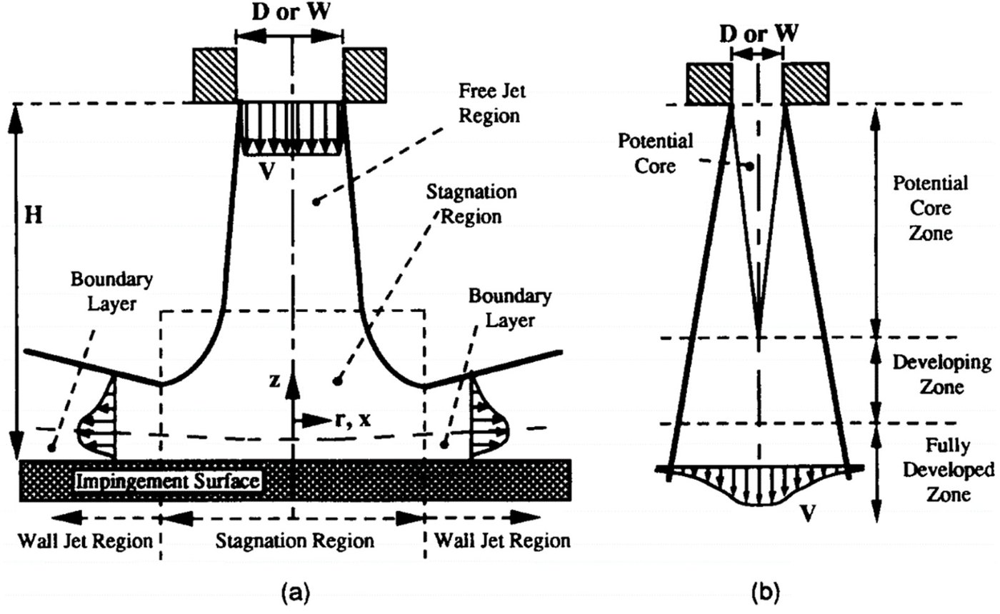
论文原图 · 冲击射流三区 自由射流 / 驻点 / 壁面射流。驻点边界层最薄，局部 Nu 最高。这就是 Barewar / Hussain 参数框架的物理内核。来源：Hussain et al., Energies 2021, 14(20):6458，Fig. 1（CC BY）。调研材料抽出。
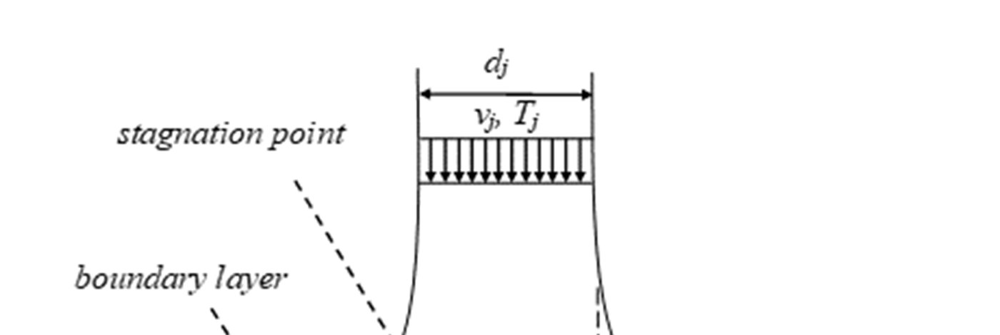
论文原图 · 驻点速度剖面 轴向动量在壁面转为径向。液冷冷板要把 GPU 热点对准这块驻点，而不是对准“某个孔的几何中心”。来源：Energies 2022, 15:1034，Fig. 1（CC BY）。调研材料抽出。
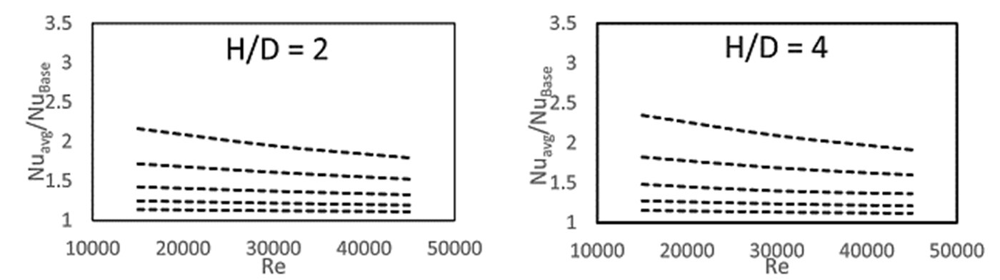
论文原图 · H/D 对换热的影响 喷距太近展不开，太远势核耗尽。液冷工程窗常取 2–6。来源：Hussain et al., Energies 2021，Fig. 7（CC BY）。调研材料抽出。
原理详解
射流换热不是“多打几个孔”，而是四个参数族的折中（Barewar 等 2023）：几何（孔径 D、喷距 H/D、孔间距 S/D、靶面肋/针/凹坑）、流动（Re、倾角、限制空间高度）、激励（旋流、脉动、扫掠）、工质。滞止区局部 Nu 最高；相邻射流的交叉流会把下游滞止区“吹歪”，边缘密封占位会造成欠冷——这就是 US11310937 专门写 near-edge jets 的原因。
和微通道比：微通道用小流量换高压降；射流常用较大流量、压降集中在喷嘴。JetCool 公开口径称微射流换热系数可超 200,000 W/m²K、微通道约 20,000 W/m²K（厂商数据，需复测）。Wiwynn 白皮书：射流冷板热阻相对传统冷板下降 20–48%，再叠加封装内流道最高约 53%。Sung & Mudawar 把射流喷进微通道，两相工况做到约 1127 W/cm² 未达临界热流。
对规格的含义：射流适合把局部 150–500 W/cm² 的热点压下去，帮助整板冲 <0.02 甚至讨论中的 <0.012 °C/W。系统约束仍是 CDU 流量和喷嘴压降；直接接触方案还要过密封与电气隔离。
- 热点针对性最强：可对准 SM、HBM 邻区、I/O 热点
- 限定压降或短流程时，往往优于长微通道
- 可做直接接触冷却（JetCool US11844193）
- 与微通道杂交：Sung & Mudawar 两相实验约 1127 W/cm² 未达 CHF
- 喷嘴压降集中；边缘密封占位导致边缘欠冷（US11310937）
- 侵蚀、震动、回流干涉造成温度花斑
- 流量需求通常大于微通道，对 CDU 更苛刻
- 直接冲击芯片背面时，密封、应力、电气隔离风险上升
- 喷嘴板：微钻孔 / 激光微孔 / 光刻电铸，孔径一致性与毛刺控制决定均匀性。
- 孔板刚度：高压差下防挠曲，常需厚板或支撑柱。
- 倾斜射流 + 肋化槽道需角度公差（US10244654）。
- 旁通孔降总压降并改善回流（US12255124）。
| 公开号 | 权利人 | 要点 |
|---|---|---|
| WO2020210587A1 / US12100643B2 | JetCool | 微射流喷嘴与电子元件共位 |
| US11844193 | JetCool | 直接接触流体模块 |
| US12002736 | — | 射流座 / 喷嘴对准功率器件热点 |
| US12255124 | — | 射流 + 旁通分流 |
| US10244654 | — | 倾斜射流 + 肋化槽道 |
| US11310937 | — | 近边缘射流歧管 |
| CN113871359A | 浪潮 | 中心淹没射流 + 离心微通道 |
| WO2026103052A1 | 华为 | 高热流分区采用射流结构 |
专利布局特征：国际专利已较密（喷嘴阵列、旁通、近边缘、倾斜角、直接接触密封）。国内相对强在整机冷板形态，弱在微喷嘴板精密制造与直接接触密封。杂交结构仍是可写空间。
3.4 金刚石（CVD 片材 / 金刚石–铜复合材料）
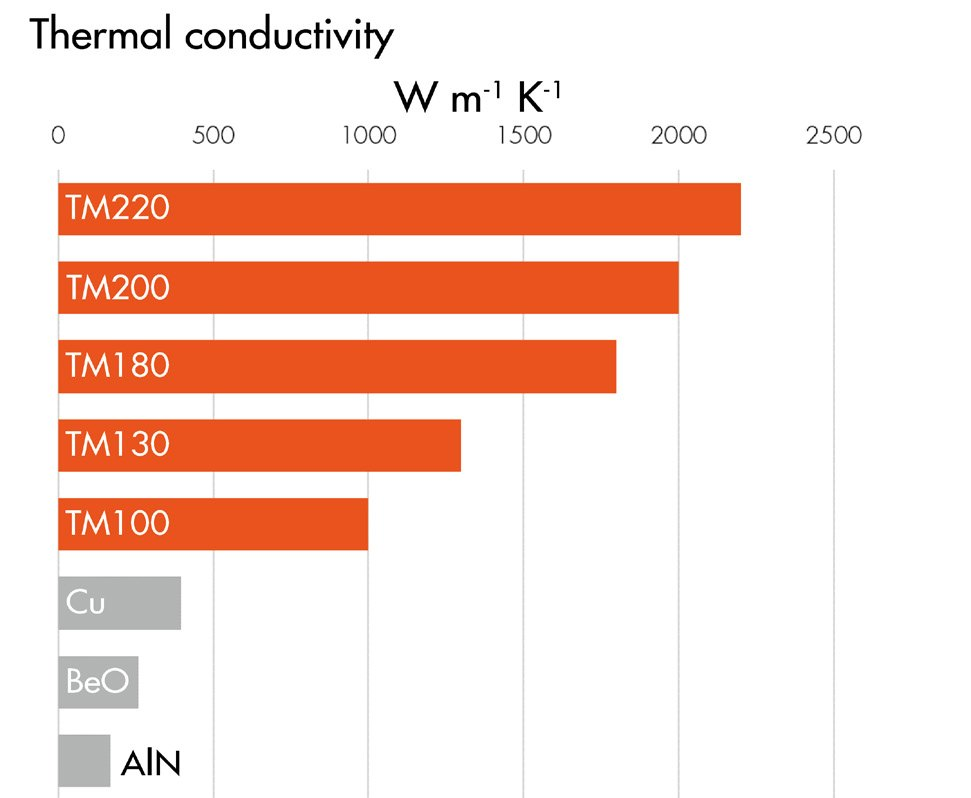
论文原图 · 金刚石 vs 铜的导热位差 Diafilm TM 系列约 1000–2200 W/(m·K)，铜约 400。这是扩散热阻的材料位差，把微通道再挖密也补不回来。来源：Element Six Diafilm 案例，Fig. 1。调研材料抽出。
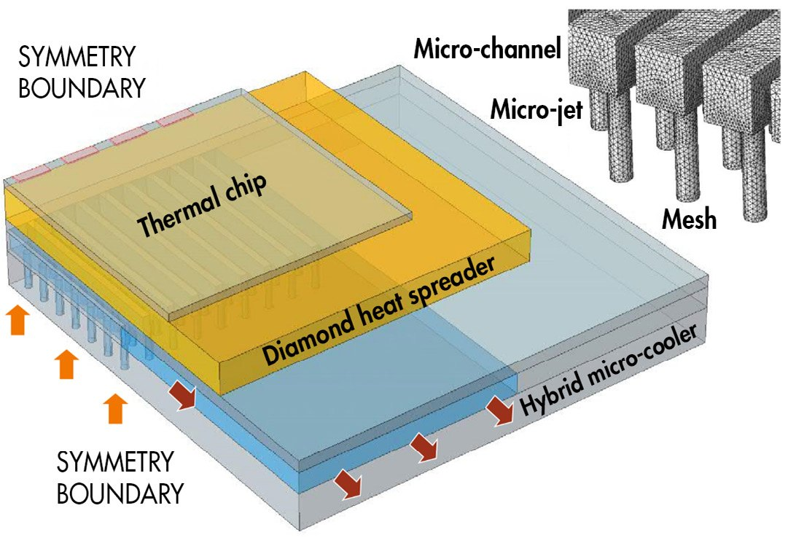
论文原图 · 金刚石均热片 + 微射流/微通道 正确叠层：芯片 → 金刚石摊热 → 微射流打驻点 → 微通道排液。金刚石先做片，不是先开金刚石槽。来源：Element Six Diafilm 案例，Fig. 2。调研材料抽出。
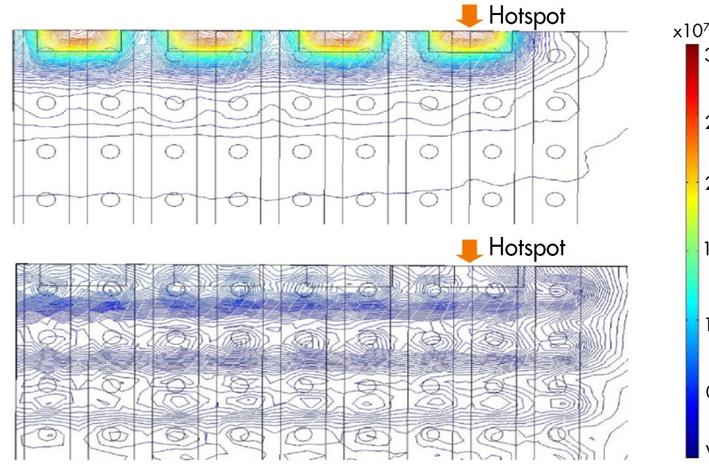
论文原图 · 有金刚石时的上表面热流 摊热之后，冷板看到的局部 q″ 下降，同一套对流就能压住热点。功率越高，温降收益越大（案例：4 → 45 °C）。来源：Element Six Diafilm 案例。调研材料抽出。
原理详解
导热热阻 Rspread 随材料热导率上升、随厚度和热点尺寸变化。CVD 金刚石室温热导约 900–2350 W/(m·K)（多晶到单晶），约为铜的 2–6 倍，且更接近各向同性。它把 0.1–1 kW/cm² 的尖峰摊成冷板对流能够对付的平均热流。Element Six 在约 9.3 kW/cm² 测试芯片上，热点温降随功率从 4 °C 增到 45 °C；键合专利的设计目标写到 ≥1 kW/cm²。
典型叠层：裸片 / TIM1 / 金刚石片 / 盖板或直接 Cu-Diamond 盖板 / TIM2 / 铜冷板。真正的工程瓶颈几乎总在界面：金刚石与铜不润湿，Ti/Pt/Au 常规金属化在高热流下界面热阻偏大，Element Six 改用铬层（WO2016087243A1）；国内专利则走磷酸盐玻璃梯度或 PVD 镀铜热压。没有把界面热阻做下去，体材料优势会被吃光。
对规格的含义：金刚石降低的是热点处的有效热流和扩热热阻，不是对流 h。它应与微通道 / 射流叠加，帮助 2 kW 级芯片在 ≤20 kPa 压降窗内仍够到 <0.02 °C/W。单独一块金刚石片加宏观流道，解决不了单位面积换热量。
- 把 chiplet 热点横向拉开，常比单纯加密流道更有效
- Cu-Diamond 可沿用现有铜冷板加工路线（Element Six 口径）
- 与 1 kW/cm² 量级局部功率密度匹配（E6 键合专利设计目标）
- 公开报道称 H200 体系已出现金刚石导热部署；Samsung 2025 申请混合金刚石 interposer
- 贵、脆、难加工、难金属化；界面热阻可吃掉体材料优势
- CTE 不匹配导致翘曲、脱层；大尺寸薄片成品率是瓶颈
- 专利壁垒集中在界面：铬键合 vs 钛铂、磷酸盐玻璃梯度界面
- 不能单独替代冷板对流
| 路线 | 关键步骤 | 难点 |
|---|---|---|
| CVD 金刚石片 | MPCVD 生长 → 抛光 → 金属化（Cr/Au 或 Ti/Pt/Au）→ 键合 | 残余应力、界面热阻、大面积均匀性 |
| 金刚石 / 铜热压 | 镀铜或表面玻璃化 → 700–850 °C、30–50 MPa 热压 | 石墨化风险、孔隙、界面连续梯度 |
| 气压浸渗 | 镀膜金刚石预制体 + 铜熔渗 | 体积分数 60–85%、热导目标 1500 W/mK 级 |
| 冷板集成 | 复合材料 3D 打印流道或机加后激光焊盖板 | 可加工性、密封、与快接头连接 |
| 公开号 | 权利人 | 要点 |
|---|---|---|
| WO2016087243A1 / US10403557 / EP3227914 | Element Six | 金刚石上铬层 + 再金属层，面向 ≥1 kW/cm² |
| CN111500892B | — | 大尺寸片状金刚石 / 铜，热导达约 1500 W/mK |
| CN122161445A | — | 金刚石铜合金冷板，PVD 镀铜热压，3D 打印肋 |
| CN122503683A | — | 磷酸盐玻璃膜 + 低温热压，梯度界面 |
| Samsung 2025 US/EP（公开报道） | Samsung | 混合金刚石热中介层，逻辑 + HBM |
专利布局特征：欧美控制高功率密度键合；中国申请密集在复合材料制备与冷板结构。规避 Element Six 时，应避开“金刚石 + 铬直接键合 + 高功率密度器件”的权利要求组合。FTO 必须单独做家族与等同原则分析。
3.5 纳米流体（Nanofluid / 磁流体 / 纳米相变胶囊）
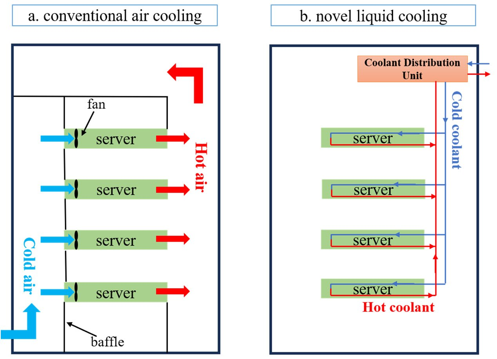
论文原图 · 风冷与液冷对照 液冷把换热从“空气+翅片”改成“水+冷板”。纳米流体综述用这张图开篇，但后文结论是：工质增益救不了微通道堵塞和电导率。来源：Energies 2024, 17(13):3151，Fig. 2（CC BY）。调研材料抽出。
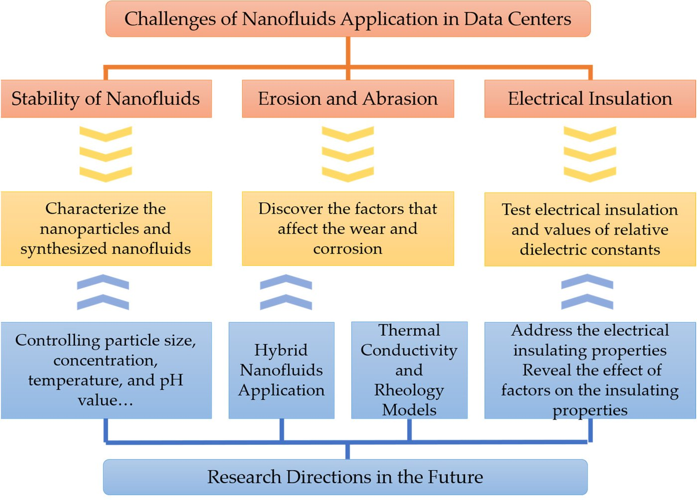
论文原图 · 数据中心用纳米流体的未关闭问题 稳定性、磨损腐蚀、电气绝缘都还没关。这是不把纳米流体写入 TCS 基线的直接依据。来源：Energies 2024, 17(13):3151，Fig. 11（CC BY）。调研材料抽出。
原理详解
纳米流体把纳米颗粒（Al₂O₃、Cu、石墨烯、CNT、Fe₃O₄ 等）分散进水 / 丙二醇 / 介电流体。换热增益来自三块：有效热导率上升（颗粒导热远高于基液）、边界层扰动（布朗运动、热泳）、以及磁流体在外场下的定点输运。综述普遍报告换热系数提升约 10–40%。磁流体专利（CN113488444B）用电磁阵列给热点加额外局部冷量；相变胶囊则靠潜热削峰。
主矛盾不在实验室增益，而在胶体稳定性与数据中心寿命。颗粒会沉降、团聚、流挂，再启动时堵微通道（CN118890850A 用空化溃灭再分散；CN122278447A 用三元流变抗流挂）。颗粒还磨损泵、快接头和通道壁，抬高电导、改变 pH，与 OCP 水基规范（低电导、低浊度、<1 CFU/mL、铜缓蚀）冲突。粘度上升还会把压降顶出 20 kPa 窗。
对规格的含义：纳米流体是工质侧增益，不提高冷板结构上限。一次成功的流道改版或取消 TIM2，通常比 +20% HTC 更划算。不宜作为 TCS 基线工质；最多在一次侧或特种工况试点。专利应写稳定配方 + 防堵结构，而不是“加入纳米颗粒提高热导”。
- 不改冷板模具即可尝试增益
- 文献与专利常报告 HTC 提升约 10–40%
- 磁流体可对动态热点做额外局部制冷
- 与空化自分散、相变胶囊结合，可写“工质 + 结构”
- 沉降、团聚、流挂：停泵后再启动会堵微通道
- 颗粒磨损泵、快接头和微通道壁
- 电导率、腐蚀、微生物、缓蚀剂冲突，5–10 年寿命难证明
- 增益通常小于一次成功的流道改版；不宜作为产品主路径
- 连续相：去离子水 + 丙二醇等；分散相：石墨烯、SWCNT、氧化物、磁性颗粒。
- 分散：球磨 / 超声 + PVP 等 + 流变改性，获得触变性与抗流挂。
- 微通道侧：空化喉部打散团聚（CN118890850A）；截面留堵塞裕度。
- 服役验证：高速泵送 ↔ 静置、冷热冲击、金属溶出、电气绝缘。
| 公开号 | 权利人 | 要点 |
|---|---|---|
| CN118890850A | — | 水力空化流道，纳米流体自分散 |
| CN122278447A | 山东烯力 | 石墨烯 + SWCNT，三元流变体系，抗流挂 |
| CN113488444B | 华中科技大学 | 纳米磁流体 + 电磁阵列，热点定点冷却 |
| 202310386028 | — | 纳米相变胶囊 + 反向热泳微通道衬底 |
| CN122055001A | — | 冷板原位铜纳米线阵列替代涂覆 TIM（界面，非工质） |
专利布局特征：中国高校与材料公司申请活跃，美欧数据中心主供应商很少把纳米流体写成产品核心——这本身说明工程化成熟度不足。应写“稳定配方 + 防堵结构 + 泵 / 滤兼容”，而不是“加入纳米颗粒提高热导”。
3.6 微通道融合冲击射流：已有方案与新专利推荐
结论：杂交已经存在，而且是当前最值得占的结构窗口。单纯“射流喷进直微通道”已被美欧基础专利和国内整机冷板覆盖。新申请必须带芯片热图分区（尤其 GPU vs HBM）、压降窗、可维护防堵、或盖板一体化工艺，不能只写“射流 + 微通道”。
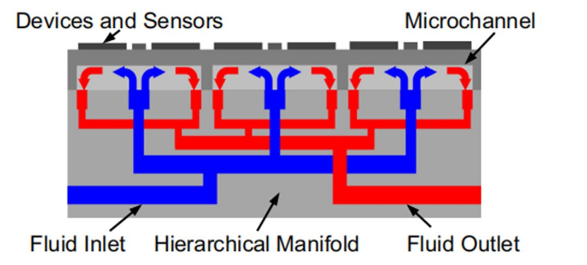
论文原图 · 分层歧管微通道 上层宽槽分配，下层短微通道换热。杂交冷板的“短通道排液”就是这条路，再在短槽上方加喷嘴即成射流–微通道。来源：Energies 2026, 19(14):3304，Fig. 13（CC BY）。调研材料抽出。
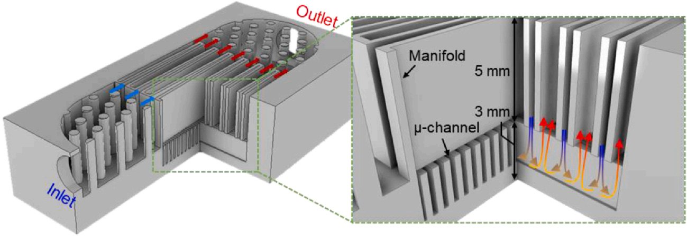
论文原图 · 增材歧管微通道 进出口分层、短流程，是铜冷板可制造版本的参照。与 Element Six 叠层图对照：歧管 / 射流 / 微通道可以是同一件。来源：Energies 2026, 19(14):3304，Fig. 8（CC BY）。调研材料抽出。
射流 + 微通道 + 金刚石的叠层原图见第 3.4 节 Element Six Fig. 2，此处不重复贴。
为什么要融合，而不是二选一
微通道的长处是小流量、大面积，短处是沿程温升和高压降。射流的长处是热点滞止区 h 极高，短处是交叉流、边缘欠冷、流量大。杂交的物理分工是：射流负责把热点边界层打断，短微通道负责把废液尽快带走并继续换热。Sung & Mudawar 早年就把圆形/槽缝射流喷进微通道，单相做到约 305 W/cm²，两相约 1127 W/cm² 未达 CHF。北京大学宋柏组 2025 年在 Nature Electronics 用硅基“变截面歧管 + 微射流 + 锯齿微通道”单相水冷做到约 3000 W/cm²，单位面积泵功约 0.9 W/cm²（嵌入式 MEMS，不是数据中心铲齿冷板）。
3.6.1 已公开的杂交架构（必须规避）
| 架构类型 | 代表 | 核心结构 | 公开性能口径 | 对后进者的含义 |
|---|---|---|---|---|
| 射流供液 + 微通道排液 | Sung & Mudawar；US10244654 | 倾斜或阵列射流喷进肋化/微通道 | 单相约 305 W/cm²；两相约 1127 W/cm² | 基础结构已公开，纯组合难授权 |
| 封装级 DLMJ | Intel US20200227341A1 | 微通道阵列上方再叠垂直微射流歧管 | 面向封装一体化 | FTO 必查；不要再写“通道上加喷嘴板” |
| 分形歧管 + 微射流 + 针肋 | US12029008B2 / US20220232732A1 | 分形进液、面外抽吸、针肋靶面 | 面向均匀分配与降交叉流 | 分形 + 射流 + 抽吸孔组合已被占 |
| 折返式射流微通道 | CN111328245B | 射流孔与回流孔交替，冲击底壁后折返 | 强调分流均匀 | 交替进出孔 + 折返是雷区 |
| 中心射流 + 离心微通道 | 浪潮 CN113871359A | 中心淹没射流 + 离心肋 + 阿基米德导流 | 匹配 CPU 径向热图 | CPU 中心射流形态避开 |
| 无泵增压腔射流冷板 | 浪潮 2025 四架构（自称已授权） | 中置扩散 / 太阳花 / 上下腔斜板 / 环形腔 | 0.8 L/min 下解热 +15–28%；同流量热量 +40%；芯片功耗上限 +28% | 整机形态专利密；斜板防堵已被宣传 |
| 热密度分区混构 | 华为 WO2026103052A1 | 同一冷板按热密度混用射流 / 微通道 / 拓扑 | 降驱动功耗 | “按热流分区用不同结构”本身已被占 |
| 四层射流 + 花瓣拓扑 | 中电 14 所 202410956672 | 一级集分液 + 过渡 + 二级集分液 + 花瓣绕流 | 自称散热 5–6 倍、流阻 −30% | 多层歧管 + 拓扑花瓣避开 |
| 叠层微射流微通道 | Appl. Sci. 2022 实验 | ~100 jets/cm²，槽缝 0.5 mm，叠铜片 | 400 W/cm²；0.11 K/W；13.5 kPa @ 1.9 L/min | 高密度槽缝射流已有实验公开 |
| 硅基 JMC / sJMC | 北大宋柏，Nature Electronics 2025 | 歧管–微射流–锯齿微通道，MEMS 三层 | 单相水 3000 W/cm²；面积热阻可至 0.036 K·cm²/W 量级 | 嵌入式硅级已发表，国内申请需查同族 |
| 进出交错单元 | IMEC 等 | 单元胞 1 进 4 出，抑制交叉流 | 仿真 / 样品 | 1 进多出单元胞不要原样复用 |
3.6.2 空白在哪里（还能写什么）
| 已挤满 | 仍相对空 |
|---|---|
| “射流 + 平行微通道”本身 | GPU 与 HBM 双物理分区：射流速度上限、HBM 冲蚀与力学隔离 |
| 分形歧管 + 抽吸孔 + 针肋 | 可更换喷嘴芯 + 在架反冲洗 + 颗粒阱（运维架构，不是再挖槽） |
| 按热密度混用三种流道（华为） | 盖板一体化（去 TIM2）的杂交，带翘曲补偿与镀层工艺 |
| CPU 中心射流 + 离心肋（浪潮） | 射流滞止点下的局部金刚石嵌币（不是整板金刚石，避开铬键合独立权项） |
| 硅基 MEMS 三层 JMC（北大已发表） | 铜冷板可制造版本：蚀刻喷嘴板 + 铲齿/短通道底板 + 扩散焊对位，压降 ≤20 kPa |
3.6.3 推荐专利方案 A（首选）：GPU / HBM 双物理杂交冷板
方案 A 是本报告建议的新权利要求结构，调研文献没有“GPU 射流 / HBM 禁射流 + 隔离肋”的现成原图，故用自绘。分区必要性见第 2.4.0 节 GB200 热图原图。
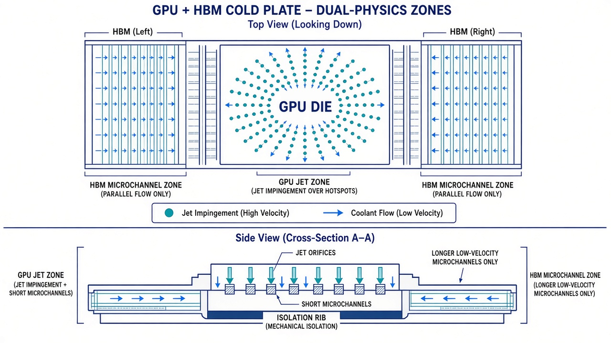
图 3-7 · 自绘示意（无对应原图）。GPU 区：密射流 + 短微通道 + 局部抽吸，对准 SM 热点。HBM 区：只走低速平行微通道，限制近壁流速，避免冲蚀与机械疲劳。中间隔离肋切断高速射流对 HBM 的串流，并提供结构刚度。
要解决的矛盾
AI 加速器不是均匀热源。GPU 逻辑区热流高、允许较高对流剪切；HBM 热流较低但结温更敏感、焊球与堆叠怕冲蚀和压装偏载。华为 WO2026103052A1 已写“按热密度用不同结构”，但没有把HBM 最大近壁速度、射流不得覆盖 HBM、隔离肋的力学功能写成必要技术特征。浪潮太阳花针对小面积 CPU，不是 chiplet 双区。
独立权利要求建议（结构，草案）
- 一种液冷冷板，包括进液腔、出液腔和换热底板；换热底板在投影上划分为第一区（对应逻辑裸片）和第二区（对应高带宽存储器）。
- 第一区设喷嘴阵列与水力直径 D1、流程 L1 的短微通道，喷嘴将冷却液冲击第一区底壁后经短微通道进入出液腔；喷嘴密度随该区热流图单调增加。
- 第二区仅设水力直径 D2 > D1、近壁设计流速低于预定上限 V2 的微通道，不设置射流喷嘴。
- 第一区与第二区之间设隔离肋，隔离肋同时构成流道隔墙和抗弯加强筋，使第二区冷却液不与第一区射流滞止区直接连通。
- 冷板在额定流量下总压降 ≤20 kPa（或项目 OEM 点）。
从属权项：局部抽吸孔仅布置在第一区；第二区通道沿 HBM 长边均流；隔离肋与封装加强环对位；可做成独立冷板或 MLCP 盖板。
规避要点：不要只写“分区用射流和微通道”（华为）；必须写 HBM 无喷嘴 + 流速上限 + 隔离肋的力学/流动双重功能 + 压降窗。
3.6.4 推荐专利方案 B：可更换喷嘴芯 + 在架反冲洗杂交冷板
要解决的矛盾
杂交最怕堵：喷嘴堵则热点失守，微通道堵则整板报废。浪潮上下腔斜板宣传防堵，但是几何防堵。数据中心要的是 5–10 年可维护：不拆 GPU 也能反冲、换喷嘴板、抓住颗粒。这是工艺 + 运维方法专利，国内相对空。
独立权利要求建议（装置 + 方法，草案）
- 冷板包括固定于服务器的微通道底板，以及可拆卸密封的喷嘴芯（孔板），喷嘴芯将进液分成射流束冲击底板后进入微通道。
- 进液和出液各设正洗口与反洗口；反洗时冷却液从出液侧进入微通道，经喷嘴反向喷出，将颗粒带入设于进液腔下游的可更换颗粒阱。
- 压差传感器跨接喷嘴芯两侧；压差超过阈值时发出反洗或更换喷嘴芯的信号。
- 方法权：服务器在架、冷板不与芯片分离的条件下完成反洗或更换喷嘴芯。
规避要点：不与浪潮斜板“防堵几何”抢形态；强调可更换芯、颗粒阱、压差阈值、在架操作。结构、方法、检测分三件申请。
3.6.5 推荐专利方案 C：盖板内短通道射流 + 滞止点金刚石嵌币
要解决的矛盾
MLCP 取消 TIM2 之后，热点仍在盖板内侧。整板铺 CVD 金刚石太贵，也会撞上 Element Six 铬键合家族。把小面积金刚石嵌币只放在射流滞止点正下方（例如占盖板投影 <15%），外围仍是铜短微通道，界面走梯度碳化物或玻璃相而不是铬独立层。
独立权利要求建议（草案）
- 一种微通道盖板，盖板内含喷嘴和流程 ≤8 mm 的短微通道，冷却液在盖板内完成冲击与排出，盖板与芯片之间不设置独立 TIM2 层。
- 在预定热点投影处嵌装导热嵌件，嵌件平面面积之和小于盖板换热面的 15%，嵌件热导率高于铜，且与铜基体通过非铬主导的梯度界面结合。
- 每一嵌件中心与至少一喷嘴轴线对位，对位偏差小于预定值（如 0.2 mm）。
- 盖板采用蚀刻 + 真空扩散焊 + 镀层，并含翘曲补偿柔性环或双件盖结构。
规避要点：避开“金刚石 + 铬直接键合 + ≥1 kW/cm²”（E6）；避开 Intel DLMJ 的“微通道上方整层垂直歧管”独立权项表述；用面积比、对位、非铬界面、去 TIM2、扩散焊工艺把方案收窄到可授权。
3.6.6 怎么落地（12 个月）
| 顺序 | 动作 | 目的 |
|---|---|---|
| 1 | 对 Intel DLMJ、US12029008B2、US10244654、CN111328245B、CN113871359A、WO2026103052A1、浪潮四架构、北大 JMC 同族做权利要求对照表 | 正式 FTO，本表不能代替 |
| 2 | 先做方案 A 的铜样：铲齿/短通道底板 + 蚀刻喷嘴板，GPU/HBM 分区，压降点锁 20 kPa | 最快能量产，差异化清楚 |
| 3 | 方案 B 与 A 捆绑：同一底板，喷嘴芯可拆 | 补运维护城河 |
| 4 | 方案 C 作为 12–24 个月 MLCP 预研，嵌币先用 Cu-Diamond 而不是整片 CVD | 材料差异化，避开铬权项 |
| 5 | 国内发明公开后 12 个月内 PCT，指定 US/EP/JP/KR/TW；结构 / 工艺 / 反洗方法分三件 | 防止一件里又窄又易被分案 |
4. 横向对比
4.1 性能与工程约束（量级，非承诺指标）
| 维度 | 微翅片 / 铲齿 | 微通道 / MLCP | 冲击射流 | 金刚石 | 纳米流体 |
|---|---|---|---|---|---|
| 主要作用 | 扩展对流面积 | 极限对流 + 短热路 | 局部破边界层 | 横向均热 | 提高工质物性 |
| 商业热流能力 | 约 50–150 W/cm² | 约 100–300；实验室 790 | 约 200–500；杂交两相 1100+ | 取决于下游对流；键合目标 1 kW/cm² | 相对基液 +10–40% HTC |
| 压降 | 中高 | 高（微米级很高） | 喷嘴局部高、系统中等 | 不直接决定 | 粘度上升则升高 |
| 均温性 | 沿程较差 | 直通道较差，分形 / 歧管较好 | 滞止区好、阵列干涉差 | 最好（均热） | 弱 |
| 堵塞风险 | 中 | 高 | 中（喷嘴） | 低 | 很高 |
| 泄漏 / 可靠性 | 成熟 | MLCP 极严 | 直接接触方案严 | 界面脱层 | 磨损与腐蚀 |
| 成本 | 低 | 中高 | 中高 | 很高 | 中（流体）+ 高（验证） |
| 产业化 | 已规模量产 | 高端导入 / MLCP 验证 | 小规模商用 | 导入期 | 实验室–中试 |
| 与 AI 2 kW 芯片匹配 | 需很大流量或液金 TIM | 主路径 | 热点补强 | 强烈建议叠加 | 谨慎试点 |
4.2 工艺门槛对照
| 工艺能力 | 铲齿冷板 | 微通道 MLCP | 微射流 | 金刚石嵌件 | 纳米工质 |
|---|---|---|---|---|---|
| 微米级蚀刻 | 不必 | 必须 | 喷嘴板需要 | 抛光 / 图形化 | 否 |
| 真空扩散焊 | 可选 | 必须（高端） | 视结构 | 金属化键合 | 否 |
| 真空钎焊 | 主流 | 中端可用 | 可用 | 慎用（污染界面） | 否 |
| 半导体洁净 | 工业级 | 半导体级 | 高 | 高 | 配方洁净 |
| 材料科学 | 铜合金 | 铜 / 硅 | 铜 / 不锈钢 | CVD + 界面冶金 | 胶体化学 |
| 认证周期 | 短 | 长（芯片厂 + GPU 厂） | 中 | 长 | 很长（寿命） |
4.3 杂交才是专利与产品的交汇点
公开文本里重复出现的“能写又能做”的组合：
- 倾斜 / 阵列射流 + 肋化或微通道排液（US10244654，Sung-Mudawar 路线）
- 中心射流 + 离心 / 分形微通道（浪潮 CN113871359A）
- 按热图分区：射流 / 微通道 / 拓扑流道混用（华为 WO2026103052A1）
- 金刚石或 Cu-Diamond 嵌件 + 铜微通道 / 铲齿
- 微通道 + 旁通 / SMA 或双金属自适应（CN120597664，US12193201）
- 盖板微通道（去 TIM2）+ 液态金属 TIM1 + 金刚石均热
5. 地域、标准与供应链含义
5.1 地域
| 区域 | 含义 |
|---|---|
| 美国 | 结构与封装基础专利最厚（IBM、Intel、NVIDIA、JetCool），诉讼与许可风险最高 |
| 欧洲 | EPO 数据完整；Element Six、IMEC、ABB、Google EP 家族需纳入监控 |
| 日本 / 韩国 | 材料、封装、金刚石 interposer（Samsung）值得单独建库 |
| 中国大陆 | 申请量大、系统级与应用结构强；制造工艺专利（扩散焊夹具、蚀刻液、在线检漏、微喷嘴板）相对少，这是可补空档 |
| 中国台湾 | 不一定专利数量最多，但卡在 NVIDIA 认证与 know-how，实际构成市场壁垒 |
5.2 标准与“事实标准”
- 曙光数创牵头国标《数据中心冷板式液冷系统技术规范》，偏系统接口、安全、检测。
- NVIDIA 供应商认证、漏液、洁净、压降–流量曲线，是比国标更硬的事实标准。
- ASHRAE 液冷进液温度、ODCC / Open Compute 快接头与二次侧规范，决定冷板接口尺寸，间接影响“连接环 / 水嘴”权利要求。
5.3 大陆供应链的真实缺口
| 环节 | 判断 |
|---|---|
| 快接头、歧管 | 国产突破较早 |
| 冷板本体（铲齿） | 能做，性能上限不够 |
| MLCP | 蚀刻 + 扩散焊 + 镀金双件盖板，仍主要在台湾认证产线 |
| 冷却液与纳米工质 | 专利多、上架少 |
| 金刚石 | 材料专利多，与 GPU lid 公差链、TIM1 共设计的系统专利少 |
6. 空白点、风险与建议布局
6.1 相对空白（更值得写、也更值得做）
- 可制造的拓扑 / 分形流道：算法专利已出现，缺的是“阈值化后仍能蚀刻 / 打印、能清洗、能检漏”的工艺权利要求。
- 射流供液 + 微通道回流的一体化歧管，适配 chiplet 多热点、且压降落在现有 CDU 曲线内。
- Cu-Diamond 或 CVD 嵌件与铜微通道的低热阻连接（避开铬键合独立权项）。
- 去 TIM2 盖板的翘曲–密封–镀层工艺（Rubin 供应链正在付费验证）。
- 防堵设计：旁通、可反冲、可拆喷嘴板、对纳米或腐蚀产物不敏感的最小通道尺寸。
- 在线热图感知 + 分区流量（传感器或无源自调节），比再申请一条蛇形槽更有区分度。
6.2 高风险雷区（申请前必须做 FTO）
- IBM / Intel 微通道与微射流歧管基础家族
- Asetek / CoolIT 服务器冷板与快接头相关家族（视目标市场）
- JetCool 微射流直接接触与喷嘴共位
- Element Six 金刚石铬键合
- NVIDIA 智能冷板与盖板一体化相关后续家族（持续监控）
6.3 分阶段建议
| 窗口 | 目标 | 动作 |
|---|---|---|
| 0–12 个月 | 守住出货 | 以铲齿 / 微翅片为基线，做非均匀节距 + 中心射流盖板，对标浪潮射流冷板与 Intel 开孔架构，做中文 + PCT。同步建立氦检、颗粒度、离子、钎料溢流数据包，把 know-how 写成方法权项。 |
| 12–24 个月 | 跟上 MLCP | 投资或联合蚀刻 + 扩散焊产线，目标通道 100–200 µm，先做独立冷板再做 lid 一体化。专利写“蚀刻–清洗–扩散焊–镀层–检漏”连续工艺。对 NVIDIA / AVC / Jentech 公开结构做家族监控，避免把认证规格直接写进权利要求。 |
| 24–36 个月 | 材料差异化 | 金刚石 / 铜嵌件放在 GPU 热点正上方，外围仍用铜微通道；界面走梯度碳化物或玻璃相，规避 Cr 独立权项。纳米流体只做特种工况或军工 / 航天中试，数据中心主循环继续用成熟水–乙二醇配方。 |
申请策略：国内先发明公开，12 个月内 PCT，指定 US / EP / JP / KR / TW。结构、工艺、检测分三件。权利要求用热流密度分区、压降上限、可清洗最小水力直径等工程量限定，减少“效果型”表述。
7. 核心专利清单（抽样）
检索日 2026-09-07。法律状态以官方库为准；下表不能作为授权结论。链接优先 Google Patents。
7.1 骨架专利速查
| 方向 | 公开号 | 申请人 / 权利人 | 区域 |
|---|---|---|---|
| 微通道冷板架构 | US12133357B2 | Intel | US |
| 微通道 + 热管智能冷板 | US12477696 | NVIDIA | US |
| 封装级微射流 + 微通道 | US20200227341A1 | Intel 体系 | US |
| 旁通可控微通道 | CN120597664A/B | 广东蓝锐 | CN |
| 多级分配微通道 | CN109104844B | 中航雷华 | CN |
| 分区混构冷板 | WO2026103052A1 | 华为 | PCT |
| 铲齿 / 针肋制法 | US9795057 | — | US |
| 交替微肋 | US12494408 | — | US |
| 自适应双金属肋 | US12193201 | — | US |
| 离心微通道 + 射流 | CN113871359A | 浪潮 | CN |
| 微射流共位 | WO2020210587A1 | JetCool | PCT |
| 直接接触微射流 | US11844193 | JetCool | US |
| 倾斜射流 + 肋槽 | US10244654 | — | US |
| 近边缘射流 | US11310937 | — | US |
| 射流 + 旁通 | US12255124 | — | US |
| 金刚石铬键合 | WO2016087243A1 / US10403557 | Element Six | WO / US / EP |
| 金刚石铜冷板 | CN122161445A | — | CN |
| 金刚石铜热压工艺 | CN122503683A | — | CN |
| 大尺寸金刚石 / 铜 | CN111500892B | — | CN |
| 纳米流体空化自分散 | CN118890850A | — | CN |
| 抗流挂纳米流体 | CN122278447A | 山东烯力 | CN |
| 纳米磁流体热点 | CN113488444B | 华中科技大学 | CN |
7.2 建议正式库补充检索的申请人
| 区域 | 申请人 |
|---|---|
| 国际 | IBM, Intel, NVIDIA, Google, Microsoft, JetCool Technologies, CoolIT, Asetek, Boyd, Vertiv, IMEC, ABB, Element Six, Samsung, TSMC, Corintis, EmCool |
| 中国大陆 | 浪潮信息 / 苏州浪潮, 曙光数创, 华为, 英维克, 中航光电, 立讯 / 领益, 广东蓝锐, 山东烯力, 华中科技大学 |
| 中国台湾 | Jentech 健策, AVC 奇宏, Auras 双鸿, Cooler Master, Delta |
8. 方法局限、下一步与来源
8.1 局限
- 未做全库家族去重与引证网络。正式立项前，建议用智慧芽 / IncoPat / PatSnap / Derwent 按第 1.3 节检索式导出，做申请趋势、家族规模、法律状态、引证爆炸点、权利要求树。
- 未做权利要求逐条比对，不能代替 FTO。进入开模或送样 NVIDIA / 华为 / 浪潮规格前，应委托专利律师对目标市场做无效检索。
- 厂商热流与热阻数据存在口径差（芯片面积、进液温度、流量、是否含 TIM）。对比时必须统一边界。
8.2 建议下一轮三份配套件
- 目标产品的权利要求对照表（自家方案 vs 第 7 节骨架专利）
- 工艺 FMEA（扩散焊堵孔、盖板泄漏、金刚石脱层、纳米沉降）
- 监控清单（NVIDIA、Intel、JetCool、Element Six、华为、浪潮，月更）
8.3 主要公开信息来源
- Ott, Wenzel, Radgen, Analysis of Cooling Technologies in the Data Center Sector on the Basis of Patent Applications, Energies 2024, 17, 3615.
- Future Market Insights, Direct-to-Chip Cold Plate Market（2026–2036 公开摘要）。
- Tuckerman & Pease, 1981；Sung & Mudawar 杂交射流–微通道实验。
- 浪潮信息，2024-12-12，“布局四大专利群”。
- 曙光数创 2025 年报 / 研报公开专利与标准口径。
- 华为 WO2026103052A1；CloudMatrix 液冷拆解公开文。
- JetCool SmartPlate 产品页及 WO2020210587A1、US11844193。
- Element Six WO2016087243A1 / US10403557；公司热管理产品说明。
- NVIDIA US12477696；Rubin / MLCP 供应链公开报道（ITES、fiisual 等）。
- 微软微流体冷却公开实验口径；Corintis Glacierware arXiv:2408.15024。
- CNIPA / Google Patents 上列 CN、US、WO 公开文本。
- PatSnap 公开景观文：液态金属冷却、金刚石功率器件与热管理（2025–2026）。
- ToneCooling 公开选型表：H100/H200 <0.03 °C/W，GB200 <0.02 °C/W（中置信）。
- NVIDIA Rubin 开发者博文：双计算 die、3360 亿晶体管、HBM4 288 GB / 22 TB/s、NVLink 6；该页未公布 TDP。
- SemiAnalysis，Vera Rubin – Extreme Co-Design：R100 Max-Q 1800 W / Max-P 2300 W（软件功率档）；VR NVL72 机柜 180–220 kW（中置信）。
- Lenovo Press LP2357：B300 TGP 1100 W；GB300 NVL72 135 kW TDP / 155 kW EDP；Grace 300 W；约 90/10 液/风。
- NVIDIA DGX SuperPOD GB300 RA：约 142 kW/柜；本仓库《NVIDIA GB300 NVL72 冷却系统总体设计报告 v2.2》对齐。
- NVIDIA DGX B300 User Guide：8×B300，系统功耗约 14.5–15.1 kW（整机，不是单 GPU TDP）。
- OCP System Liquid Cooling Guidelines；Meta Tide / OAM 热阻栈公开文；OCP Project Deschutes CDU。
- Barewar 等，Thermal Science and Engineering Progress 39 (2023) 101697（射流参数族）。
- Wiwynn 射流冷板白皮书（热阻相对传统冷板 20–48%）。
- 浪潮信息 2025-05-28：四种射流冷板架构（中置扩散 / 太阳花 / 上下腔斜板 / 环形腔）。
- Wu, Xiao, He, Wang, Song, Nature Electronics 2025：Jet-enhanced manifold microchannel，约 3000 W/cm²。
- US12029008B2 Hybrid microjet liquid-cooled heat spreader；CN111328245B 折返式射流微通道。
- 配图优先采用同仓库调研材料
coolingplate/papers/figures/抽出原图（Energies / ASHRAE / Element Six / arXiv，见各图题来源行）。无对应原图的仅保留 3 张自绘：热阻链分层、铲齿工艺、方案 A。